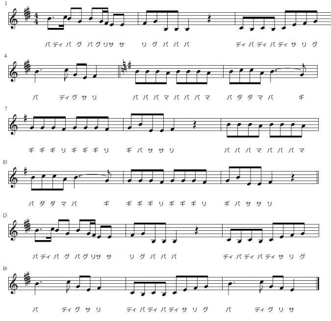

大歓喜トップ >> 声楽と音度名唱 >> 拡張移動サの実践(2)
拡張移動サの実践(2)
既存の音感の移入(2)
長音階と短音階の読み替え
長音階と短音階が、一曲の中で、同主調の関係で同居するとき、拡張移動サでは、主音を意味する音度名「サ」の位置するピッチクラス（及び対応する音名）は変わらず、変化するⅲ度音・ⅵ度音・ⅶ度音の方の音度名の母音を変えて読む。
（「ギ←→グ」「ダ←→ディ」「ニ←→ヌ」）
下の楽譜は、本居長世作曲「青い眼の人形」の旋律に移動サ音度名を振ったものである。中間部の5小節目から12小節目までが自然短音階的な旋法であり、その前後が長音階的になっている。
この音度名を見ると、「サ」のピッチクラスはE音（ホ音）のまま一曲を通じて変わらず、短音階的な部分では、G#音(嬰ト音)「グ」の代わりにG音(ト音)「ギ」が、また、C#音(嬰ハ音)「ディ」の代わりにC音(ハ音)「ダ」が旋律に登場して、その旋法の変化を表現している。
（最終更新2010.10.23）
大歓喜トップ >> 声楽と音度名唱 >> 拡張移動サの実践(2)